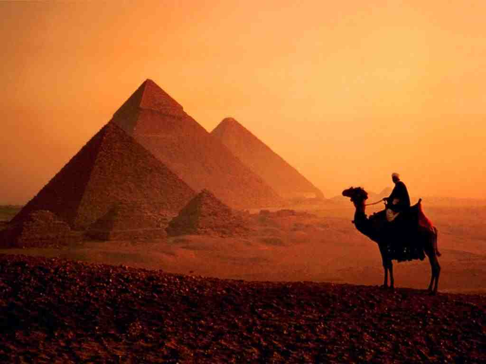
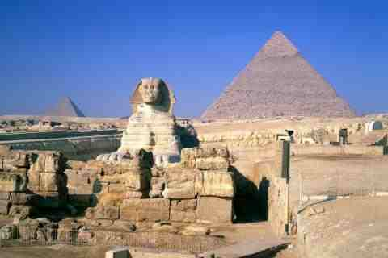
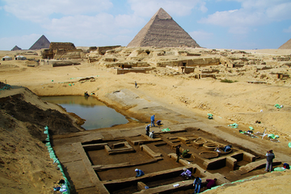
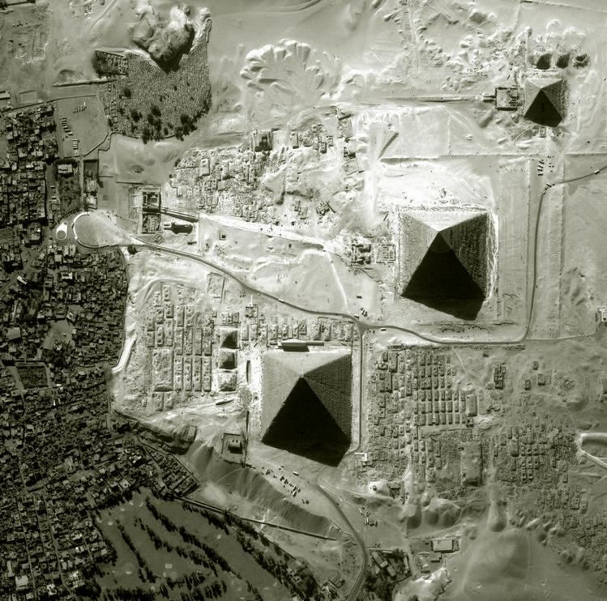
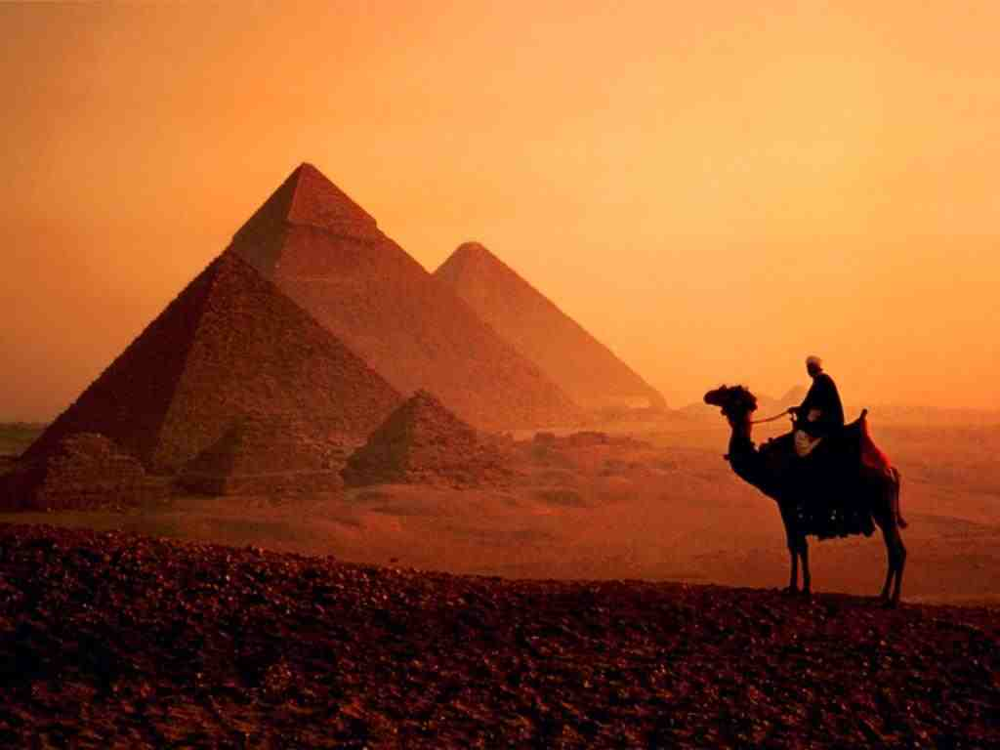
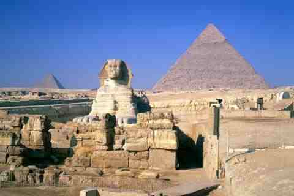
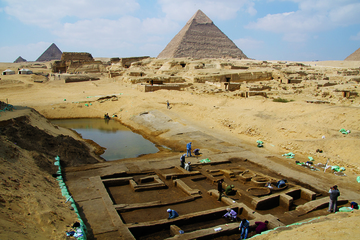
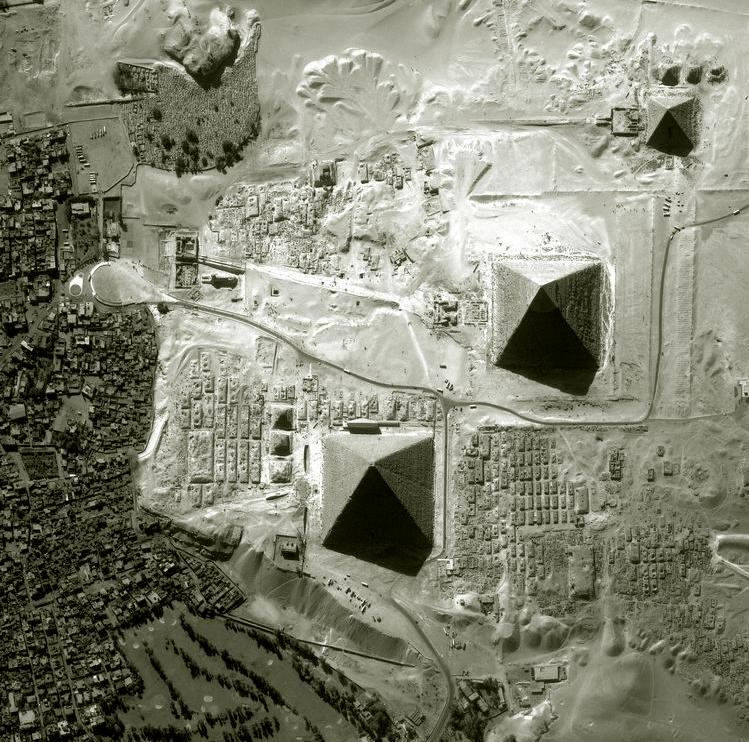

|  | |||
 |
 | ||
|  |  |  |
|  | |||
|
 | ||
|  |  | |
Giza is the third largest city in Egypt. It is located on the west bank of the Nile, some 20 km (12.43 mi) southwest of central Cairo. Along with Cairo Governorate, Shubra El-Kheima, Helwan, 6th October City and Obour, the five form Greater Cairo metropolis.
The city of Giza is the capital of the Giza Governorate, and is located near the northeast border of this governorate in coordinates. It is located right on the banks of the River Nile. The city's population was 2,681,863 in the 2006 national census, while the governorate had 6,272,571 at the same census. Its large population made it the world's second largest suburb in 2006, tied with Incheon, South Korea and Quezon City, Philippines, second only to Yokohama, Japan.,
Giza is most famous as the location of the Giza Plateau: the site of some of the most impressive ancient monuments in the world, including a complex of ancient Egyptian royal mortuary and sacred structures, including the Great Sphinx, the Great Pyramid of Giza, and a number of other large pyramids and temples.